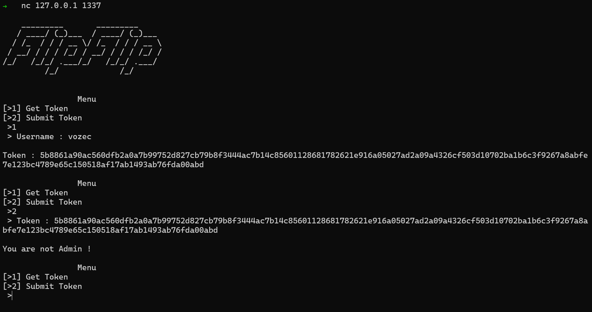

Présentation de l'attaque 'Bit Flipping' sur de l'AES CBC
Planted May 25, 2022
Introduction
L’AES (“Advanced Encryption Standard”) est un chiffrement par blocs utilisé de nos jours dans la sécurité informatique. Il repose sur le chiffrement d’information découpé en plusieurs blocs et le chiffrement de ces blocs peuvent être fait de plusieurs manières selon la configuration du système . Ainsi il en existe plusieurs modes :
- ECB
- CBC
- CFB
- OFB
- CTR
- CTS
- …
Aujourd’hui , nous allons aborder une attaque présente sur l’AES en mode CBC .
Comprendre le mode CBC
Comme présenté avant, CBC est un mode de chiffrement des blocs d’information . CBC pour Chain By Chain
Tous son fonctionnement peut être résumé dans ce schéma suivant qui semble un peu barbare :

On voit que chaque bloc est chiffré grâce à :
- Une Clef
- Le block précédent (chiffré)
Par Exemple, le block N°4 sera chiffré avec le bloc N°3 et celui-ci sera lui aussi chiffré avec le N°2 etc ..
Pour information, le premier bloc, n’ayant pas bloc précédent , utilisera ce qu’on appelle l’IV , le Vecteur d’initialisation.
Par convention, la taille des blocs sont de 16 , ainsi , l’iv et la clef auront aussi cette taille.
L’attaque BitFlipping
Ici , contrairement à d’autres attaques sur d’autres chiffrements , nous n’allons pas essayer de récupérer la clé et l’iv de chiffrement , nous allons directement modifié un message chiffré pour impacter le contenu du message déchiffré .
Supposons le schéma suivant :
from Crypto.Cipher import AES
from Crypto.Random import get_random_bytes
from Crypto.Util.Padding import pad, unpad
from datetime import datetime
from binascii import hexlify, unhexlify
flag = "flag{YoU_F1iiiPM3}"
key = get_random_bytes(16)
badword = ['admin','\'','true','false']
message = '\n _________ _________ \n / ____/ (_)___ / ____/ (_)___ \n / /_ / / / __ \\/ /_ / / / __ \\\n / __/ / / / /_/ / __/ / / / /_/ /\n/_/ /_/_/ .___/_/ /_/_/ .___/ \n /_/ /_/ \n'
def encrypt(data):
iv = get_random_bytes(AES.block_size)
cipher = AES.new(key, AES.MODE_CBC, iv)
return hexlify(iv + cipher.encrypt(pad(data.encode('utf-8'),AES.block_size)))
def decrypt(data):
raw = unhexlify(data)
cipher = AES.new(key, AES.MODE_CBC, raw[:AES.block_size])
dec = unpad(cipher.decrypt(raw[AES.block_size:]), AES.block_size)
print(dec)
return dec
def menu():
while(True):
print("\n Menu")
print("[>1] Get Token")
print("[>2] Submit Token")
input_ = input(" >")
if(input_ == "1"):
return 1
elif(input_ == "2"):
return 2
def createToken(username):
token = "username="+str(username)+"&admin=false&time="+str(datetime.timestamp(datetime.now()))
print(token)
return encrypt(token).decode('latin1')
def check(token):
try:
if("admin=true" in decrypt(token).decode('latin1')):
return f'\nGG , here is your flag : {flag}'
else:
return '\nYou are not Admin !'
except Exception as ex:
print(ex)
return "Error"
def main():
print(message)
while(True):
if(menu()==1):
username = input(" > Username : ")
isbad = False
for element in badword:
if(element in username):
isbad = True
break
if(isbad == True):
print(f'\nBadWord !!! "{element}"')
else:
print("\nToken : "+createToken(username))
else:
token = input(" > Token : ")
print(check(token))
if( __name__ == "__main__"):
main()
(Issue de notre ctfd)
Le système est simple, on peut créer des tokens d’authentifications pour un utilisateur choisi et si celui-ci est ‘admin’ , le flag nous ai donné
Malheureusement , on ne peut créer des tokens avec un nom d’utilisateur choisi par l’utilisateur .
Voici ce que nous allons faire :
- Créer un token qui va nous aider pour récrire
admin=false - Effectuer un Flip pour que le déchiffrement rendre
admin=true;au lieu deadmin=false - Envoyer le nouveau token et récupérer le flag
Approche Extérieur du challenge

Nous avons donc le token suivant :
5b8861a90ac560dfb2a0a7b99752d827cb79b8f3444ac7b14c85601128681782621e916a05027ad2a09a4326cf503d10702ba1b6c3f9267a8abfe7e123bc4789e65c150518af17ab1493ab76fda00abd
qui correspond à
username=vozec&admin=false&time=1653558714.62664
On peut donc découper le token en blocs de 32 caractères (16*2 car le token est en hexadécimal)
def split(plain,ciphered,IVgive):
clearBlock,cipherBlock = [],[]
plain = (blocksize//4)*"_IV_" + plain if(IVgive == True) else plain
plain = padRDN(plain)
for i in range((len(plain)//(blocksize))):
clearBlock.append(plain[i*blocksize:blocksize*(i+1)])
cipherBlock.append(ciphered[(i*blocksize)*2:(blocksize*(i+1))*2])
return clearBlock,cipherBlock
def padRDN(str_):
while (len(str_)%blocksize != 0):
str_+="_"
return str_
token = '5b8861a90ac560dfb2a0a7b99752d827cb79b8f3444ac7b14c85601128681782621e916a05027ad2a09a4326cf503d10702ba1b6c3f9267a8abfe7e123bc4789e65c150518af17ab1493ab76fda00abd'
cleartext = 'username=vozec&admin=false&time=1653558714.62664'
blocksize = 16
lblock , CiBlock = split(cleartext,token,True)
print(lblock , CiBlock)
Sortie :
➜ python3 solve.py
['_IV__IV__IV__IV_', 'username=vozec&a', 'dmin=false&time=', '1653558714.62664']
['5b8861a90ac560dfb2a0a7b99752d827', 'cb79b8f3444ac7b14c85601128681782', '621e916a05027ad2a09a4326cf503d10', '702ba1b6c3f9267a8abfe7e123bc4789']
Ainsi, ici le d de dmin=false&time= correspond au byte 62 (0x62) du 3ème bloc
Or , on sait que chaque bloc est chiffré à partir du précédent .
Ainsi, si je modifie le u de username (0xcb) , le déchiffrement du block suivant : dmin=false&time= donnera Xmin=false&time= avec X une lettre autre que d
Vous l’aurez compris, grâce au bloc précédent , on peut modifier le texte déchiffré du bloc suivant !
Dans nôtre challenge, nous pouvons rentrer un nom d’utilisateur de la taille que l’on veut . On sait aussi que la taille de chaque block est de 16
On peut créer le token suivant :
username=AAAAAAAAAAAAAAAAAAAAAAA&admin=false&time=1653559752.826288
Ici , avec AAAAAAAAAAAAAAAAAAAAAAA , on crée un bloc complet de A . On va pouvoir sacrifier ce bloc pour modifier le suivant :
['_IV__IV__IV__IV_', 'username=AAAAAAA', 'AAAAAAAAAAAAAAAA', '&admin=false&tim', 'e=1653559752.826', '288_____________']
['3b85f168d58e1fafbe9cb8ddd3e158d6', '5fcc51ae90264e510adb56853e82d127', '638456a6b304a8c89ab4b1ec0a16a674', '2b974fbdd420e49d080ef512e03a2068', 'f722d7f7d16356dd6d07530271f40945', '5610a062fb2cc4c1a9f143c82c2e3995']
Essayons de modifier le bloc 3 AAAAAAAAAAAAAAAA = 638456a6b304a8c89ab4b1ec0a16a674 pour que le suivant : &admin=false&tim devienne &admin=true&atim
Ainsi , le déchiffrement donnera :
username=AAAAAAAu + Le reste du bloc sacrifié +&admin=true&ttime=1653560081.31627
Comment obtenir le bon byte pour chaque caractère ?
Pour obtenir le byte à placer dans le 3ème bloc, on a besoin de :
- Le byte actuel non modifié (ici:
2b974fbdd420e49d080ef512e03a2068) - Le Plain text actuel (ici:
&admin=false&tim) - Le Plain text voulu (ici:
&admin=true&atim)
Pour chaque lettre , on va Xor les 3 informations lettres par lettres :
def get_bitflip(currentBit , Letter_Spotted , Letter_edited):
result = int(currentBit,16) ^ ord(Letter_Spotted) ^ ord(Letter_edited)
return chr(result).encode('latin1').hex()
Enfin, on peut écrire une fonction qui fait tous ce travail à notre place :
def flipBlock(indexBlock,indexLetter,newletter):
indexChar = indexLetter%blocksize
hex_spotted = CiBlock[indexBlock-1][indexChar*2:(indexChar*2)+2]
letter_spotted = Clblock[indexBlock][indexChar:indexChar+1]
flipped = get_bitflip(hex_spotted ,letter_spotted, newletter)
CiBlock[indexBlock-1] = CiBlock[indexBlock-1][:indexChar*2] + flipped + CiBlock[indexBlock-1][(indexChar*2)+2:]
Clblock[indexBlock] = Clblock[indexBlock][:indexChar] + newletter + Clblock[indexBlock][(indexChar)+1:]
On peut donc l’utiliser ainsi :
flipBlock(3,7,"t")
flipBlock(3,8,"r")
flipBlock(3,9,"u")
flipBlock(3,10,"e")
flipBlock(3,11,"&")
flipBlock(3,12,"t")
Ainsi, le token qui sera déchiffré ressemblera à ceci :
username=AAAAAAAu\xb1\xe9\nM.\xad1N\x89\xfe\xf9\xca\x8a\xe7\x98&admin=true&ttime=1653560081.31627
La partie avec les 16*A a était modifié donc la suite est mal déchiffrée mais le bloc suivant est celui voulu.
Ainsi, toute la difficulté de cette attaque est de bien paddé ses blocs pour pouvoir modifier son token aisément.
De plus , dans le challenge , aucun parsing sur time n’est effectué donc changé time en ttime n’impact pas le résultat !
L’exploit final
from pwn import *
from datetime import datetime, timedelta
def split(plain,ciphered,IVgive):
clearBlock,cipherBlock = [],[]
plain = (blocksize//4)*"_IV_" + plain if(IVgive == True) else plain
plain = padRDN(plain)
for i in range((len(plain)//(blocksize))):
clearBlock.append(plain[i*blocksize:blocksize*(i+1)])
cipherBlock.append(ciphered[(i*blocksize)*2:(blocksize*(i+1))*2])
return clearBlock,cipherBlock
def padRDN(str_):
while (len(str_)%blocksize != 0):
str_+="_"
return str_
def get_bitflip(currentBit , Letter_Spotted , Letter_edited):
result = int(currentBit,16) ^ ord(Letter_Spotted) ^ ord(Letter_edited)
return chr(result).encode('latin1').hex()
def flipBlock(indexBlock,indexLetter,newletter):
indexChar = indexLetter%blocksize
hex_spotted = CiBlock[indexBlock-1][indexChar*2:(indexChar*2)+2]
letter_spotted = Clblock[indexBlock][indexChar:indexChar+1]
flipped = get_bitflip(hex_spotted ,letter_spotted, newletter)
CiBlock[indexBlock-1] = CiBlock[indexBlock-1][:indexChar*2] + flipped + CiBlock[indexBlock-1][(indexChar*2)+2:]
Clblock[indexBlock] = Clblock[indexBlock][:indexChar] + newletter + Clblock[indexBlock][(indexChar)+1:]
url = '127.0.0.1'
port = 1337
blocksize = 16
payload = b'A'*7 + b'A'*blocksize
proc = remote(url,port)
proc.sendlineafter(b' >',b'1')
proc.sendlineafter(b' > Username : ',payload)
proc.recvuntil(b'Token : ')
token = proc.recv().decode().split('\n')[0]
cleartext = "username="+payload.decode('utf-8')+"&admin=false&time="+str(datetime.timestamp(datetime.now()))#+"'}"
print(f"\nToken Received : {token}\n\n")
print(cleartext)
Clblock , CiBlock = split(cleartext,token,True)
print(Clblock)
print(CiBlock)
flipBlock(3,7,"t")
flipBlock(3,8,"r")
flipBlock(3,9,"u")
flipBlock(3,10,"e")
flipBlock(3,11,"&")
flipBlock(3,12,"t")
print('\n\n')
print(Clblock)
print(CiBlock)
Final_Token = ''.join(CiBlock)
print(f'\n\nCrafted : {Final_Token}')
proc.sendline(b'2')
proc.sendlineafter(b' > Token : ',Final_Token.encode('utf-8'))
print('\n')
proc.interactive()
Sortie finale :
➜ python3 solve.py
[+] Opening connection to 127.0.0.1 on port 1337: Done
Token Received : 2db5fd2622fe952ff6e148fbe13eaa2ff26b2d4400ffe86c85fc13905fcf8f7525985cdad9e8275a0c498dac8ed1c02539057a6bc41035e7273ba3354b1caaa79b3f1d66676045ab849f628cc2d18959473beb8523cb6fb8610497f172748b40
username=AAAAAAAAAAAAAAAAAAAAAAA&admin=false&time=1653560893.271365
['_IV__IV__IV__IV_', 'username=AAAAAAA', 'AAAAAAAAAAAAAAAA', '&admin=false&tim', 'e=1653560893.271', '365_____________']
['2db5fd2622fe952ff6e148fbe13eaa2f', 'f26b2d4400ffe86c85fc13905fcf8f75', '25985cdad9e8275a0c498dac8ed1c025', '39057a6bc41035e7273ba3354b1caaa7', '9b3f1d66676045ab849f628cc2d18959', '473beb8523cb6fb8610497f172748b40']
['_IV__IV__IV__IV_', 'username=AAAAAAA', 'AAAAAAAAAAAAAAAA', '&admin=true&ttim', 'e=1653560893.271', '365_____________']
['2db5fd2622fe952ff6e148fbe13eaa2f', 'f26b2d4400ffe86c85fc13905fcf8f75', '25985cdad9e827481f509befdcd1c025', '39057a6bc41035e7273ba3354b1caaa7', '9b3f1d66676045ab849f628cc2d18959', '473beb8523cb6fb8610497f172748b40']
Crafted : 2db5fd2622fe952ff6e148fbe13eaa2ff26b2d4400ffe86c85fc13905fcf8f7525985cdad9e827481f509befdcd1c02539057a6bc41035e7273ba3354b1caaa79b3f1d66676045ab849f628cc2d18959473beb8523cb6fb8610497f172748b40
[*] Switching to interactive mode
GG , here is your flag : flag{XXXXXXXXXXX}
Menu
[>1] Get Token
[>2] Submit Token
>$
[*] Interrupted
[*] Closed connection to 127.0.0.1 port 1337
25985cdad9e827481f509befdcd1c025 est devenu 25985cdad9e8275a0c498dac8ed1c025 !
Et Bam , le flag !